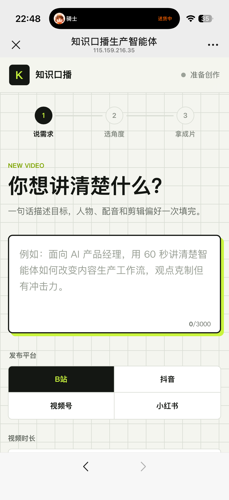
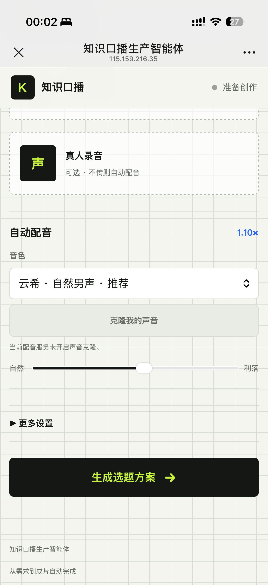

FEATURED PROJECT · AI AGENT
知识口播生产智能体
面向知识类内容创作者的一站式 AI 视频生产工作台：用户只需描述内容目标并确认选题，系统即可自动完成脚本、配音、逐句字幕、素材匹配、数字人关键片段与最终成片。
01将复杂的视频生产流程压缩为“说需求—选角度—拿成片”三步
02支持发布平台、时长、数字人、人物图、真人录音与自动配音配置
03自动核验来源、匹配网页录屏与 B-roll，并完成字幕、动效和终稿合成
LIVE PRODUCT


说需求→选角度→拿成片